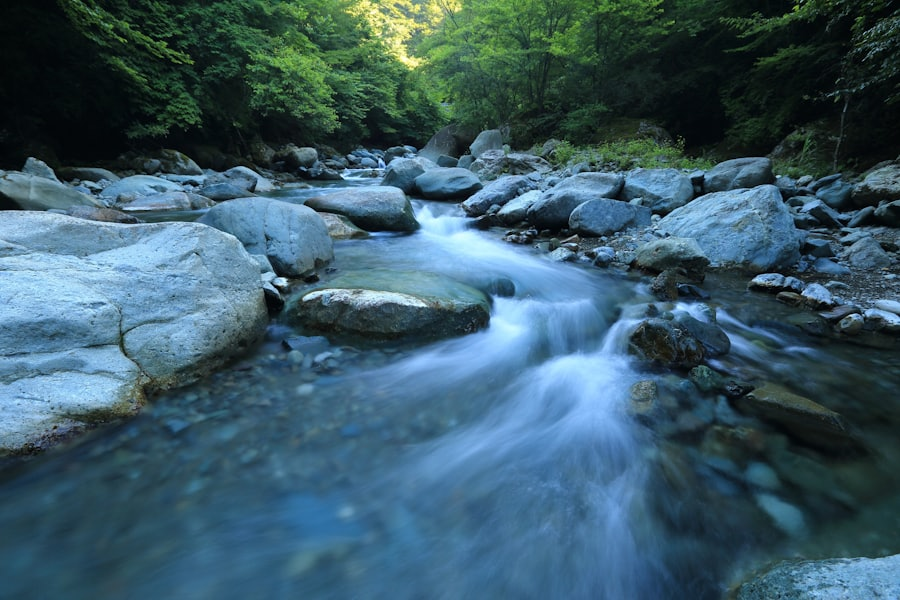
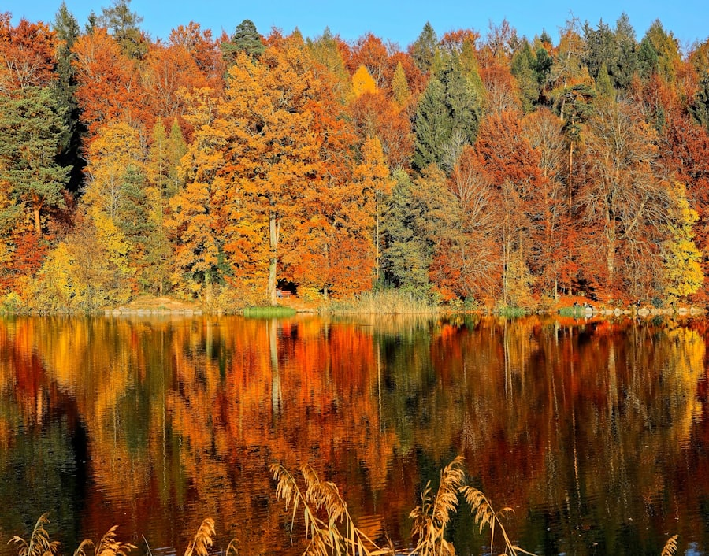
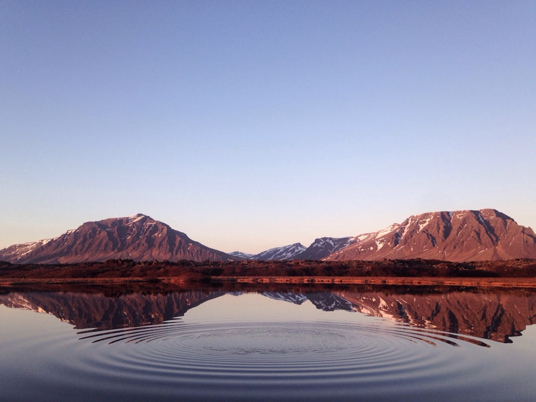
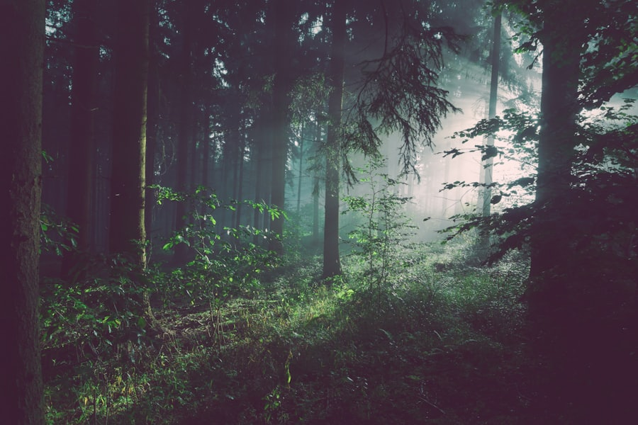
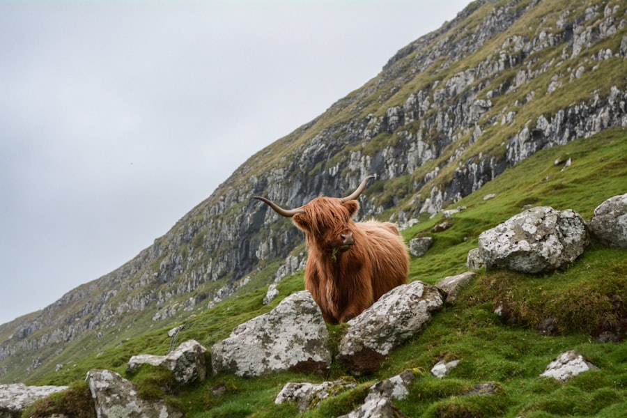
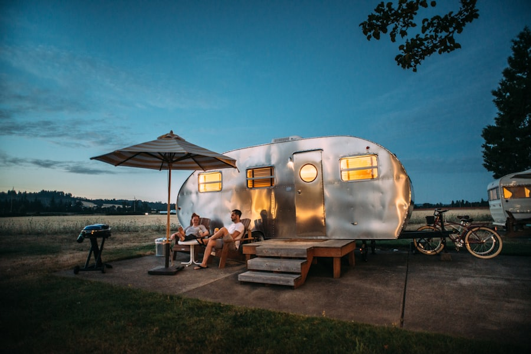

避暑山庄
世界文化遗产、清代夏宫。秋天湖区柳黄芦白、山区层林初染,"红墙金叶"的配色是它独有的秋。湖区步行+山区观光车是经典走法。
在百度地图查看官方信息:微信公众号"承德避暑山庄";配图为皇家古建主题示意图
2人 · 自驾 · 慢节奏 · 秋色主题
天津出发 · 10.1 — 10.6 · 六天五晚 · 串联承德皇家园林 / 塞罕坝林海 / 乌兰布统草原 / 多伦湖光,把坝上最浓的秋色一次收进镜头
整条线是一个顺时针环线:天津 → 承德 → 塞罕坝 → 乌兰布统 → 桦木沟/蛤蟆坝 → 多伦 → 承德/原路 → 天津。10.1–10.6 正落在坝上秋色的顶峰窗口(白桦金黄、落叶松橙红、草甸转枯黄),每一天都有明确的"主拍目标",节奏前紧后松,最后一天留给返程。
今日看点:皇家园林的秋是"红墙+黄叶"的配色,与后面草原的"金+橙"完全不同,值得专门留半天。
今日车程最长(全程约 5.5–6.5h 含停留),务必两人轮换驾驶;围场过后加油站渐稀,进塞罕坝前加满。
乌兰布统景区通票约 120 元、3 日有效,今天买票后 D4 上午仍在有效期内;景点间为砂石/土路,轿车可通行但慢,建议沿车辙行驶勿碾压草场。
蛤蟆坝在乌兰布统以北,今天的动线是"先北上、再折向东南",看似绕但把两个最美晨光点都收了;若想省力,可放弃蛤蟆坝、只走桦木沟,能多睡 1.5h。
国庆假期最后一日(10.6)为返程高峰,京津/京秦方向 15:00–19:00 易堵,能早走尽量早走。
按动线顺序排列。坝上景点分散,「景区通票+自驾随停」是最高效的玩法;所有开放时间与票价以景区官方实时公示为准。
世界文化遗产、清代夏宫。秋天湖区柳黄芦白、山区层林初染,"红墙金叶"的配色是它独有的秋。湖区步行+山区观光车是经典走法。
在百度地图查看官方信息:微信公众号"承德避暑山庄";配图为皇家古建主题示意图
三代人种出的百万亩人工林海。秋日落叶松转橙红、白桦金黄、云杉仍绿,三色林冠一路铺到天边——这是全程"第一眼秋色"。
在百度地图查看官方信息:微信公众号"塞罕坝国家森林公园"

七个相连泡子嵌在湿地里,木栈道环湖。秋日芦苇转金、水面倒映林线,清晨常有平流雾,是塞罕坝最上相的一站。
在百度地图查看配图为湿地溪流主题示意图
串联御道口—塞罕坝的百公里风景廊道:风车、丘陵草甸、湿地、桦林轮番登场,每一个观景台都值得停 10 分钟。只走公路不进景区则全程免费。
在百度地图查看配图为山野公路主题示意图
草原+森林+月亮湖+百花坡的组合地貌,比塞罕坝更开阔。若时间紧,走月亮湖一小段即可感受"高原湖+秋草"的味道。
在百度地图查看配图为草原日光主题示意图

坝上秋色的"封面机位":湖畔白桦金黄,无风时整排倒影落进水里,清晨薄雾一起便是大片。栈道环湖,慢慢走一圈约 40 分钟。
在百度地图查看配图为秋湖倒影主题示意图
《还珠格格》《芈月传》《狼图腾》的取景地。丘陵草甸如波浪起伏,桦树丛点缀其间,光线通透时随便一框都是"欧洲风光"。
在百度地图查看官方:克什克腾文旅公众号;配图为丘陵草原主题示意图
因山体同时呈现红、黄、橙、绿、褐五色而得名,是乌兰布统秋色浓度最高的点;登顶小平台可俯瞰全景。顺路的夹皮沟白桦林适合拍人像。
在百度地图查看配图为秋林主题示意图
康熙大战噶尔丹的古战场。水面开阔,清晨雾气+水鸟+远山层叠,常能遇到牧马人赶马群踏水而过(可提前与马场约)。
在百度地图查看配图为湖面晨光主题示意图
"油彩画廊,摄影天堂"。白桦丛林、针阔混交疏林、山地草甸在这里层层叠叠;园内小河头溪流清浅,清晨水汽遇冷凝成树挂,是摄影人的私藏点。
在百度地图查看配图为林间公路主题示意图
南北两山夹一沟,沟底小河蜿蜒、坡地散落茅屋草舍,秋日层林与炊烟同框,"百拍不厌"的摄影宝地。
在百度地图查看配图为山林俯瞰主题示意图

高原内陆湖,环湖公路适合慢开。秋日湖水湛蓝、岸线草甸转金,日落时水面一片金红,是全程最适合"发呆看晚霞"的地方。
在百度地图查看配图为山湖倒影主题示意图

汇宗寺为康熙敕建的藏传佛寺,曾是漠南黄教中心,黄顶老榆、转经筒静谧;山西会馆是清代晋商"漠南商埠"的见证。两处相距不远,合计 1.5–2h。
在百度地图查看配图为古寺林荫主题示意图

D4 南下多伦的顺路彩蛋:一条新公路蜿蜒穿过草甸与风车林,车少景野,随停随拍,是"不绕路就能多赚一段风景"的点位。
在百度地图查看配图为高原牧场主题示意图
坝上伴手礼以牧家自制+县城特产店为主。挑选原则:看产地、看配料表、不贪低价、不碰"野生鹿茸/虫草"类噱头品。
本地黄牛自然风干,咸香有嚼劲。挑配料表短、无浓烈香精味的;真空包装常温放 1–2 周,后备厢带回毫无压力。约 60–120 元/斤。
奶豆腐咸酸带奶香,是草原的"奶酪"。新鲜款易变质,只买真空小包装;奶皮可直接当零食。回去尽快冷藏。
坝上高寒杂粮的主产区,认准产地标注"坝上/围场/克旗"、无添加的礼盒装。回家蒸莜面窝窝、煮荞麦面都很香。
本地清香型白酒适合送长辈;马奶酒多为低度乳浊型,玻璃瓶易洒,后备厢直立固定、加缓冲。
皮雕钥匙扣/卡包 50–150 元较合理;银饰多为藏银合金,按喜好买。蒙古刀属铁路/民航禁限带品,自驾带回虽可,但不建议作为随手礼。
只收有真实当地身份的活动;可复制到任何城市的"手工课"一律不放。
红山军马场的马温顺、马倌经验足,零基础也能走。出发前问清路线、时长、是否含保险,选正规马场;草原深处的浅滩涉水段最出片。
普通轿车到不了"B 面乌兰布统":溪流弯道、晨雾谷地、牧归坡地。本地司机兼向导,知道几点几分光线落在哪道山梁上。国庆期间提前 1 天预约。

手把肉、锅茶、烤羊排围着炉子吃,饭后走到院子外,10 月的坝上夜空几乎没有光污染——银河、流星肉眼可见。带一件最厚的衣服,夜里是真的冷。
大型马术实景演出,套马、叼羊、马踏水花轮番上阵,场面感强。若 D3 晚恰逢排期(常在 19:30 前后),值得替换一次普通晚餐安排;场次以官方当日公布为准。
只列两类:当地小吃与值得专程去的店;不含高端餐厅、咖啡、连锁。评分来源为大众点评;未逐一核实的门店不标具体分值,到店前可在点评内按"离你最近"复核。
承德清晨老店代表,羊骨汤熬得浓白、杂碎处理干净。D1 抵达当晚或 D6 返程早晨都值得专程喝一碗。
在百度地图查看军马场镇区"牧家乐一条街"多家牧民自营,住+吃一站式,晚饭后出门就能看银河。挑点评条数多、近期评价稳的那家,菜单先问价再点。
在百度地图查看汇宗寺、山西会馆一带的老城街区藏着几家本地蒙餐与涮肉馆,D4 晚与 D5 午餐都能复用;肉是本地草原羊,涮起来没有膻腥。
在百度地图查看D2 进坝前的午餐落点,围场是"木兰围场"故地,县城家常馆的莜面和炖菜扎实便宜,比景区内性价比高出一截,顺带把油加满。
在百度地图查看